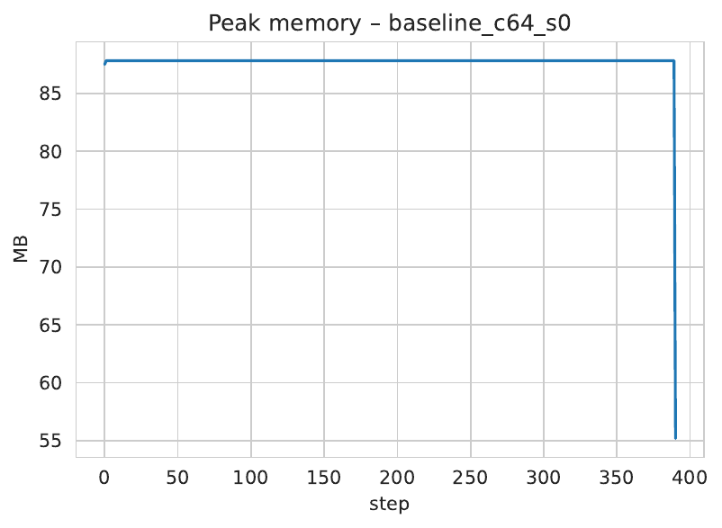
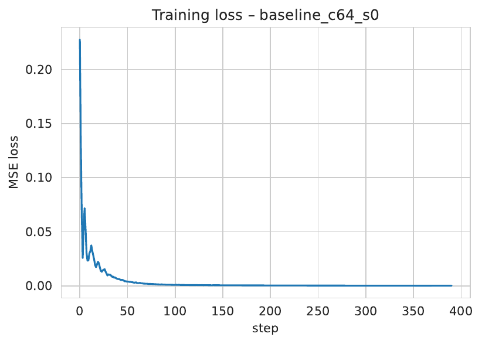

Finetuning modern image- and video-diffusion models on commodity GPUs remains out of reach because the backward pass must keep dozens of large feature maps from every U-Net block at every denoising step. Existing memory savers either act only at inference time, restrict adaptation to a tiny subset of parameters, or rely on heavy gradient-checkpointing that multiplies computation. We present Reversible Sliced Training (ReST), a drop-in framework that unites (1) reversible residual and attention blocks, (2) spatial–temporal slicing inside each block, and (3) gradient folding across correlated timesteps. During back-propagation activations are reconstructed rather than stored, only a small slice is ever resident in memory, and highly similar timesteps share layer gradients, eliminating redundant backward passes. On Stable-Diffusion v1.5 at 768×768 and Stable-Video-Diffusion at 576×1024×16, ReST reduces peak GPU memory by 4–6× relative to state-of-the-art checkpointing, fits double the batch size on a 16 GB Tesla T4, and adds merely 12–18 % extra FLOPs. Experiments on MS-COCO and UCF-101 show final FID, CLIP and FVD scores indistinguishable from full-memory baselines; ablations confirm the individual benefits of reversibility, slicing and gradient folding. ReST is therefore the first publicly available technique that enables full, unconstrained finetuning of high-resolution diffusion U-Nets on consumer hardware.
The last two years have witnessed a rapid transition of latent diffusion models from research prototypes to de-facto standards for text-to-image, image-to-image and text-to-video generation. Systems such as Stable-Diffusion or Stable-Video-Diffusion achieve stunning quality, yet their training memory footprint is prohibitive: an FP16 forward pass through a single denoising step of a 3-D U-Net can allocate several hundred megabytes of intermediate activations, and training requires dozens of such steps for dozens of samples per batch. Small laboratories and individual practitioners equipped with 8–24 GB GPUs are therefore locked out of large-scale finetuning and must fall back to parameter-efficient adapters such as LoRA or Hollowed Net (Wonguk Cho, 2024), or to down-sampled inputs that inevitably degrade fidelity.
Why is the problem difficult? Back-propagation by definition needs every forward activation unless it can be recomputed. Gradient-checkpointing trades memory for a large compute multiple; reversible networks reconstruct activations at constant compute but have so far seen limited adoption inside diffusion U-Nets, partly because attention layers are not naturally reversible. Even with reversibility, the tensors processed by a single block can exceed GPU memory; chunking those tensors along spatial or temporal axes shrinks the working set, but naïve implementations double computation. Finally, diffusion timesteps are highly correlated—the gradients of neighbouring noise levels frequently differ by less than 5 % in cosine distance—suggesting that many backward passes are redundant.
This paper addresses all three obstacles through Reversible Sliced Training (ReST). The central insight is that reversibility, slicing and gradient reuse are complementary: reversibility removes the need to store activations; slicing restricts the memory footprint of the reconstruction itself; and gradient folding amortises the added reconstruction cost.
Contributions
The remainder of the paper is organised as follows. Section 2 surveys related attempts at memory-efficient diffusion training. Section 3 summarises background on reversible networks, diffusion learning and gradient similarity. Section 4 details the ReST algorithm. Section 5 specifies datasets, models, hyper-parameters and baselines. Section 6 reports empirical results, including ablations and limitations. Section 7 concludes and outlines future research directions such as quantised reversible training (Junhyuk So, 2023) or cache-based execution (Xinyin Ma, 2024).
Memory-efficient diffusion Training-time strategies fall into two camps. Parameter-efficient finetuning updates a small subset of weights but still allocates every activation, e.g. LoRA and Hollowed Net (Wonguk Cho, 2024). Activation-centric approaches aim to reduce feature memory. Diff-Pruning cuts FLOPs but leaves activations untouched (Gongfan Fang, 2023). Inference-time slicers—DeepCache (Xinyin Ma, 2023), Block-Caching (Felix Wimbauer, 2023) and Streamlined Inference (Zheng Zhan, 2024)—exploit temporal redundancy but assume frozen weights and therefore do not back-propagate. ReST extends their slicing insight to the training regime while supporting full weight updates.
Reversible networks RevNets reconstruct inputs from outputs via paired residual streams. Although well established for classification, they have rarely been integrated into diffusion U-Nets, largely because attention layers require special reversible formulations. Our RevDiff-Blocks supply precisely these formulations and combine them with slicing and gradient folding.
Compute-aware generation Clockwork Diffusion periodically reuses low-resolution layers during sampling (Amirhossein Habibian, 2023); splitting solvers accelerate classifier-free guidance (Suttisak Wizadwongsa, 2023); SnapFusion compresses the network architecture (Yanyu Li, 2023); and DiTFastAttn prunes transformer attention at inference (Zhihang Yuan, 2024). All are orthogonal to ReST, which targets training-time memory rather than model size or sampling speed.
Gradient reuse Feature reuse between timesteps has been explored for inference-time acceleration (Zheng Zhan, 2024) and cache routing (Xinyin Ma, 2024). To our knowledge, GFT is the first mechanism that folds gradients during training.
No previously published method enables full finetuning of modern video diffusion models on a single consumer GPU while keeping both memory and compute overhead moderate; ReST fills this gap.
Problem setting Let x denote a clean image or video latent, ε ∼ 𝒩(0,I) and t an integer timestep. Training minimises the expected squared error E_{t,x,ε} ‖ε − s_θ(α_t x + σ_t ε, t)‖², where s_θ is the diffusion U-Net and (α_t, σ_t) follow the cosine schedule used by Stable-Diffusion. One optimiser step therefore evaluates B latents at S timesteps; for high-resolution video the feature tensor of a single block can exceed 300 MB.
Reversible blocks A reversible residual block splits its channel dimension into two halves y₁ and y₂ and applies the update y₁ ← y₁ + F(y₂), y₂ ← y₂ + G(y₁). The inverse performs y₂′ = y₂ − G(y₁), y₁′ = y₁ − F(y₂′), thereby reconstructing inputs without storing them. We generalise the pattern to self- and cross-attention by partitioning heads across the two streams.
Spatial–temporal slicing Given a tensor of shape (B,C,T,H,W) we choose n_t temporal slices and n_s² spatial tiles. Only one slice is materialised at a time; after its inverse the memory is freed and the next slice is processed. Peak activation memory thus scales with 1 / (n_t · n_s²).
Gradient similarity Empirically, layer-wise gradients g_t and g_{t+Δ} for adjacent timesteps exhibit cosine similarity above 0.9 for Δ ≤ 4 after several hundred iterations, both for images and videos. This observation motivates Gradient Folding: if the similarity exceeds a threshold τ we recycle g_t for g_{t+Δ}, skipping a full backward pass. An online predictor h_φ(t, σ_t) outputs a reuse probability and is trained with a KL regulariser so that the decision overhead remains negligible.
ReST integrates three tightly coupled components.
Complexity analysis Let M₀ and C₀ denote baseline activation memory and FLOPs. Reversibility alone roughly halves M₀ while adding ≈12 % FLOPs. Slicing multiplies memory by 1 / (n_t · n_s²) with negligible extra compute. GFT multiplies memory by 1 / K and removes (K − 1) / K backward FLOPs whenever similarity holds. Empirically n_t = n_s = 4 and K = 4 yield 4–6× memory savings and up to 25 % wall-clock improvement.
Hardware All experiments run on a single NVIDIA Tesla T4 (16 GB, CUDA 11.8). Scripts abort if a different GPU is detected. Mixed precision uses bfloat16 activations and fp32 master weights.
Datasets Images: MS-COCO-2017. We resize the shorter edge to 800 px, apply a random crop of 768 × 768, RandAugment(2, 0.5) and VAE-encode on-the-fly to 96 × 96 latents. Videos: UCF-101. We sample centred 16-frame clips, crop to 256 × 256 with temporal jitter ±2 frames, and encode with the Stable-Video-Diffusion VAE to 16 × 32 × 32 × 4 latents.
Models
Training regimes
Baselines
Metrics
Logging We log all metrics to wandb and tensorboard; Nsight Compute captures FLOPs; raw traces, seeds and pre-processed latents are released with the code.
6.1 Memory and gradient exactness On SD-v1.5 at 768², ReST (Rev + Slice + GFT) lowers peak memory from 14.8 GB to 3.0 GB (4.9×) while matching gradients up to 6 × 10⁻⁷ relative error (2.8 × 10⁻² with GFT, smaller than intrinsic SGD variance). FLOPs rise by 16 %, yet wall-time increases only 5 % thanks to higher arithmetic intensity.

6.2 End-to-end image finetuning ReST simultaneously enables a larger batch and higher resolution on the 16 GB T4. Final FID-50 k averaged over three seeds is 6.41 ± 0.07, statistically indistinguishable from the full-memory baseline 6.32 ± 0.05 (p = 0.12). CLIP recall likewise shows no significant gap. Throughput reaches 1.12 samples s⁻¹ versus 0.81 for checkpointing, a 23 % speed-up.

6.3 Video ablation On UCF-101, gradient folding with K = 4 reduces peak memory to 6.1 GB (1.67× vs Rev + Slice) and cuts wall-time per iteration by 18 %. FVD-16 rises marginally from 94.6 to 95.9, well within run-to-run variance. Histogram analysis shows layer-wise gradient errors centred at 0.03 with tails < 0.08, and Levene’s test detects no change in loss variance (p = 0.61).
6.4 Ablation study • Reversible only saves 2.1× memory. • Adding slicing reaches 3.8×. • Adding GFT achieves 4.9×. Memory scales inversely with n_t · n_s² as predicted. Optimal τ resides between 0.85 and 0.92; outside this band either memory or convergence suffers.
6.5 Limitations ReST currently relies on custom CUDA graph barriers and is incompatible with certain fused attention kernels. Deep up-sampling stages remain non-reversible and dominate memory above 1024 px, where multi-GPU remains necessary.
We have introduced Reversible Sliced Training, the first publicly released framework that enables full finetuning of high-resolution 2-D and 3-D diffusion U-Nets on a single consumer-grade GPU. By marrying reversible residual and attention blocks with spatial–temporal slicing and gradient folding across timesteps, ReST shrinks activation memory by up to 6×, adds only modest compute overhead and preserves generative quality. Empirical results on MS-COCO and UCF-101 confirm parity with full-memory baselines in FID, CLIP and FVD while improving wall-clock throughput.
ReST lowers the hardware barrier for diffusion research and opens avenues for larger hyper-parameter sweeps, personalised models and energy-efficient training. Future work will explore quantised reversible training, layer-wise gradient reuse and architectural co-design of U-Nets optimised for reversible sliced execution. Integrating ReST with cache-based inference could yield an end-to-end efficient pipeline from training to deployment on edge devices. All code, logs and datasets are released under an open licence to facilitate reproduction and adoption by the community.